npm modules
me
@reggi on github@thomasreggi on twitter
why bother creating node modules?
npm i my-mod1.0.0 -> 1.0.1my dream:
reuse as much as possibe
un-exported functions 😩
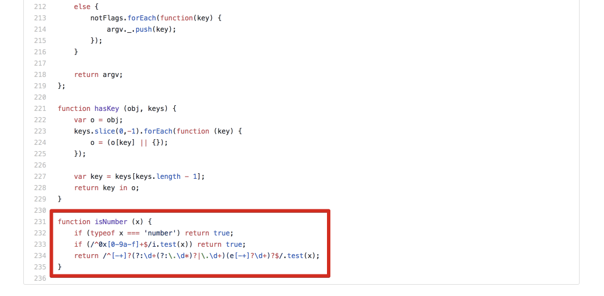
this everywhere 🚀
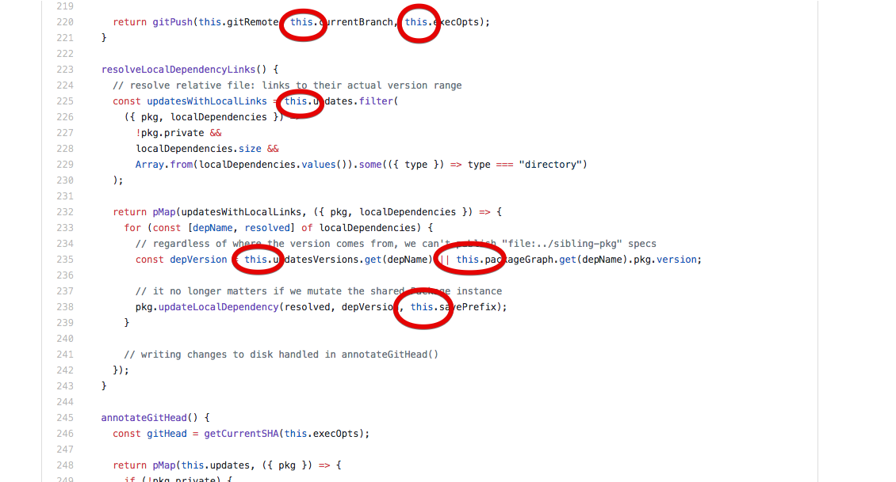
how do we create a node module?
Files!
package.jsonindex.jspackage.json
{
"name": "thomas-reggi-npm-talk",
"version": "1.0.0",
"main": "index.js"
}
main.js
module.exports = "Hello world"
now what?
publishing!
npm loginnpm publish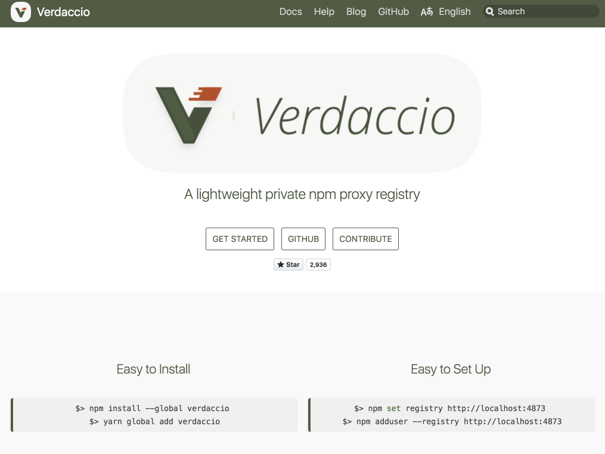
registry flag
flag:
npm login --registry (registry-url)npm publish --registry (registry-url)npm set registry http://localhost:4873examples:
npm login
npm login --registry http://localhost:4873
npm publish
npm publish --registry http://localhost:4873/
now that it's publshed what...
npm viewrequireableusing the npm view command
npm view
npm view npm-modules-talk --registry http://localhost:4873/
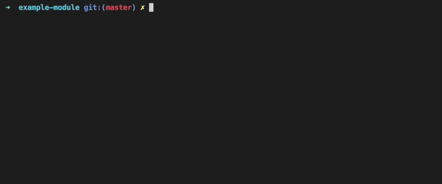
npm view version
npm view npm-modules-talk version --registry http://localhost:4873/
nope
check our work
mkdir check-our-work
cd check-our-work
touch index.js
npm init -y
npm install npm-modules-talk --registry http://localhost:4873/
const winning = require('npm-modules-talk')
console.log(winning) // should log "Hello world"
node index.js
running the node file that uses the node module
node ./index.js
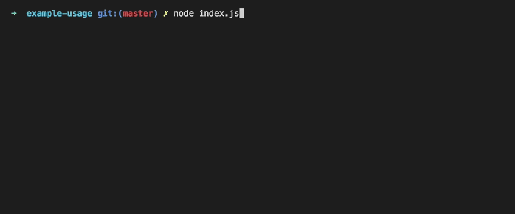
pro tips 💅
.npmignoremonorepoWhat is .npmignore?
Just like .gitignore but for npm.
__snapshots__
coverage
screenshots
examples
index.js
index.test.js
test.js
.pkgrc
.gitignore
example
package-local.json
node_modules
Tar without ignore:
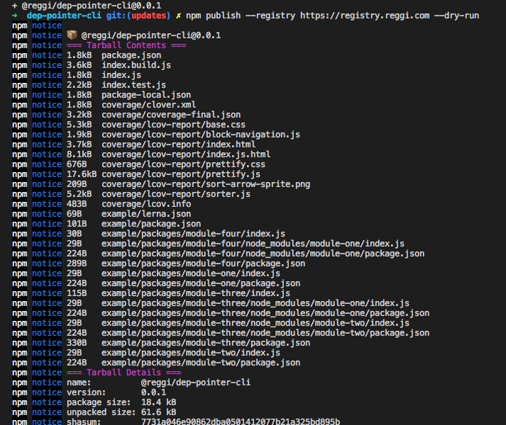
Tar with ignore:
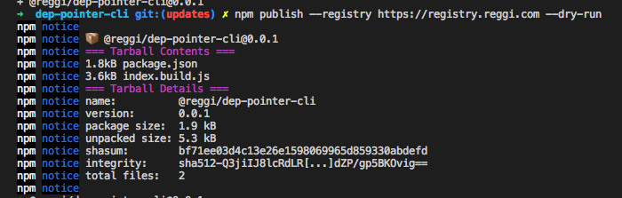
What is a monorepo?
Everybody loves dragons.
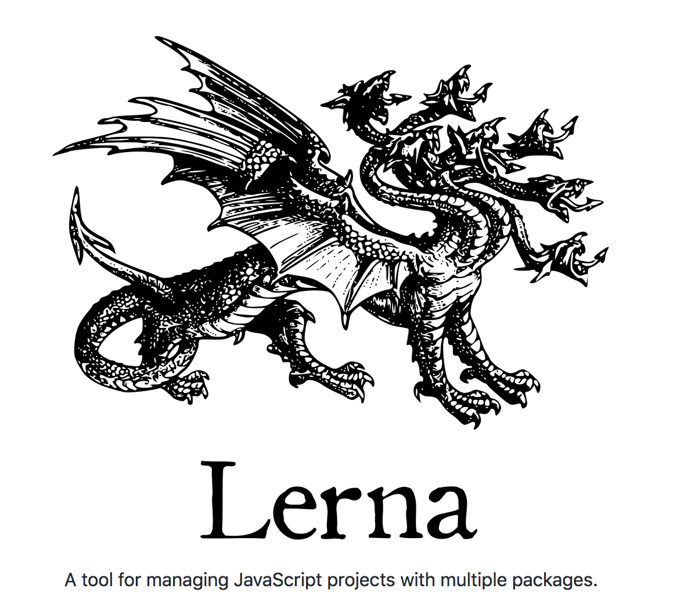
single repo many packages
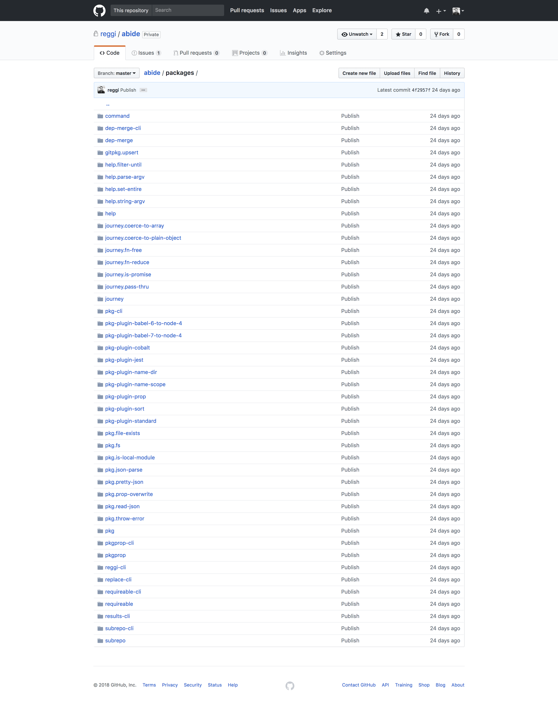
each module is small
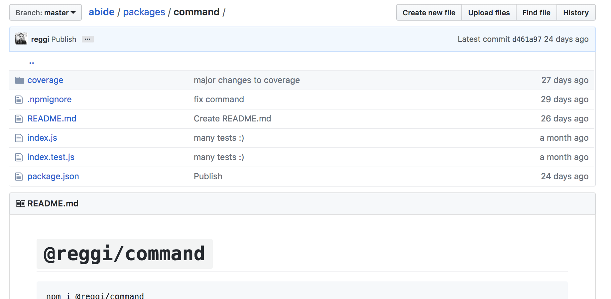
consume your own modules
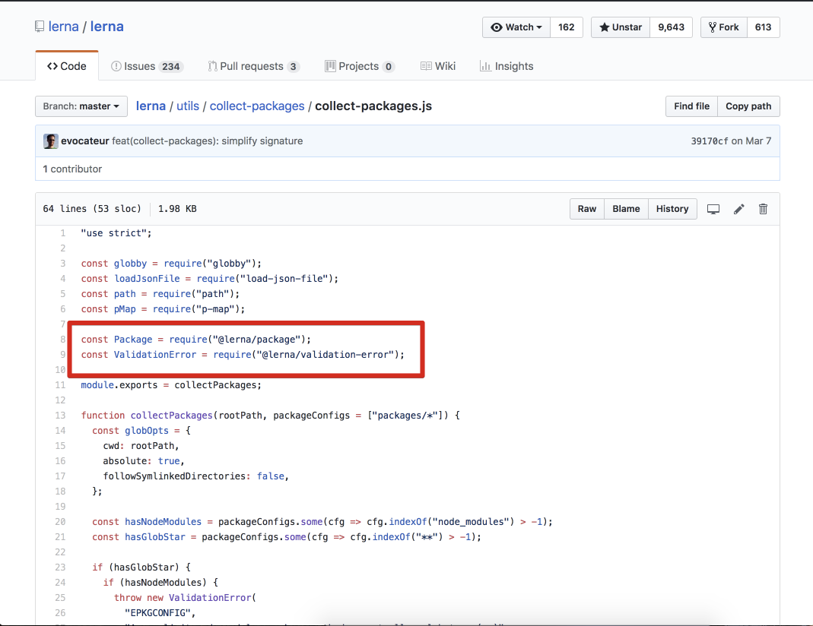
What is a private registry?
issues happen, centralization 🌋🔒😿
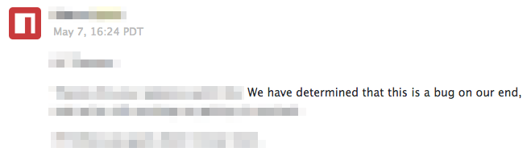
have a backup.
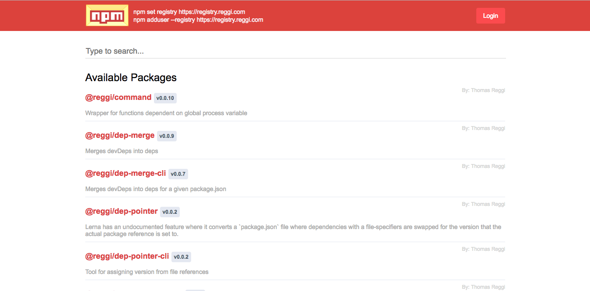
have no fear
story time
my first node module
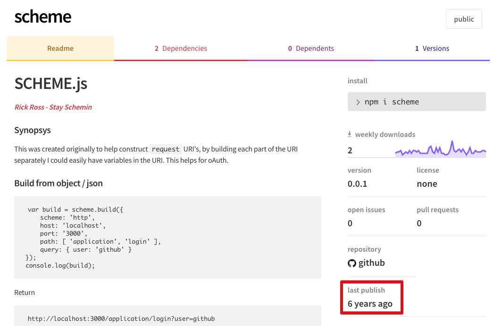
what it did, was dumb
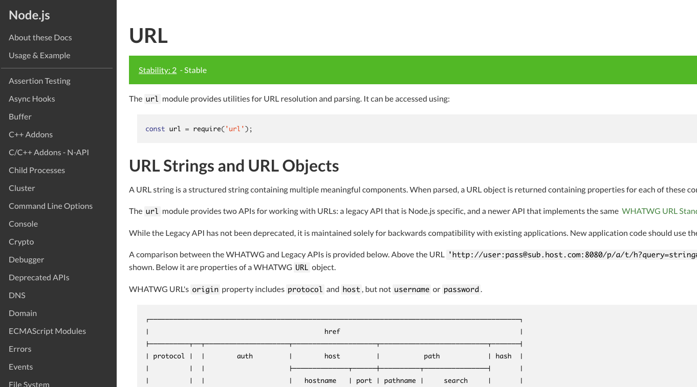
how it did it, was even dumber
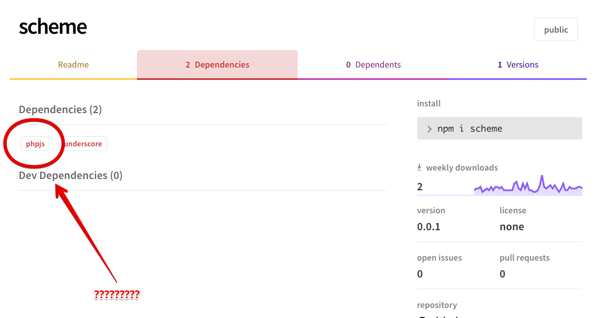
php?
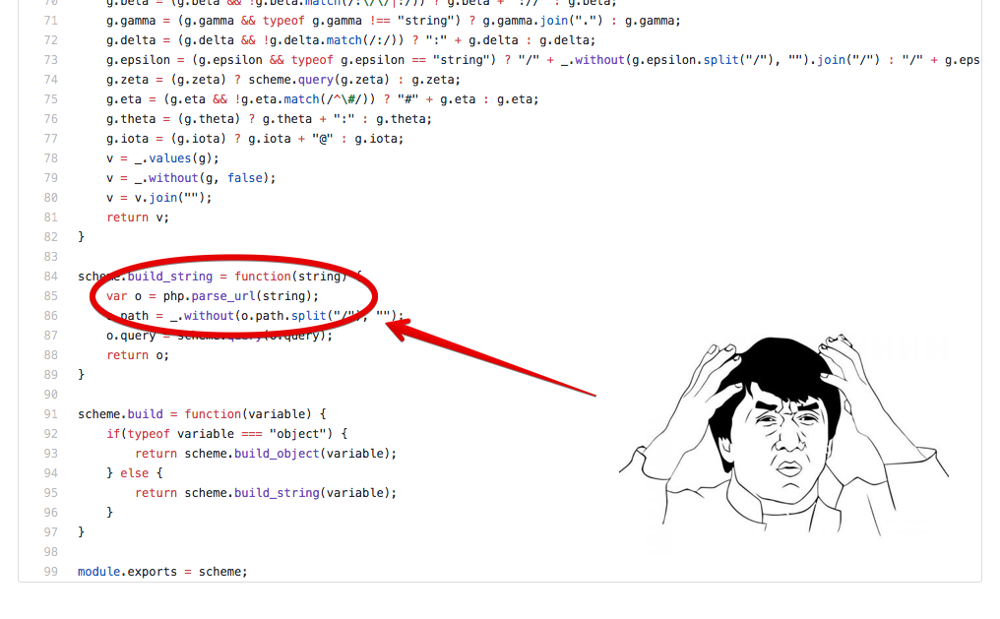
so don't worry! don't fear the npm publish command
the end